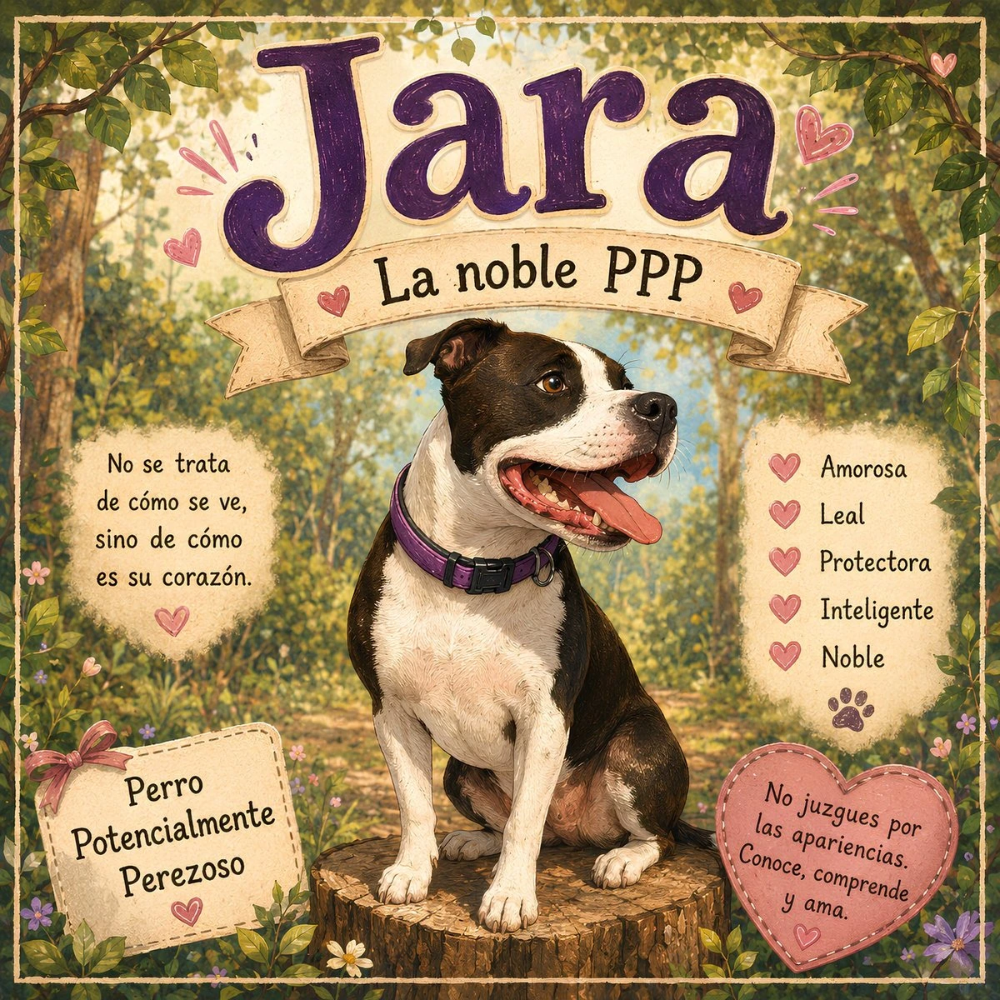

Juan Manuel Vela Vacas
Historias infantiles donde la tradición, la imaginación y Jerez cobran vida.
Descubre historias llenas de magia, tradición y emoción, creadas para pequeños y mayores.
DESCUBRIR HISTORIAS CONOCER AL AUTORCada libro comienza con una pregunta
Historias muy diferentes, nacidas de la imaginación, la tradición y esas pequeñas cosas que merecen convertirse en cuento.

El origen del Ratoncito Pérez
Antes de convertirse en el ratón más famoso del mundo, Pérez fue solo un pequeño ratón que vivía en Jerez.
Descubrir la historia →
Jara, la noble PPP
Una historia de amor, respeto y educación, en El Puerto de Santa María. No juzgues por cómo se ve, sino por cómo es su corazón.
Conocer a Jara →
El origen de Papá Noel: San Nicolás
Un viaje ilustrado hasta el santo que inspiró una de las leyendas más mágicas de la Navidad.
Descubrir la historia →
Hola, soy Juan Manuel.
Soy de Jerez y me gusta convertir ideas, recuerdos y pequeñas historias en cuentos que puedan disfrutar tanto los niños como los mayores.
Me inspiran la tradición, los animales y esa magia que aparece cuando una historia consigue quedarse en la memoria.
También puedes encontrarme en Goodreads
Consulta mi perfil de autor y mis libros en Goodreads.
Mi perfil de Goodreads también enlaza esta web oficial.
VER PERFIL EN GOODREADS → VER PERFIL DE AUTOR EN AMAZON →Explora más historias
Si te ha gustado una historia, descubre también el resto de cuentos del autor.